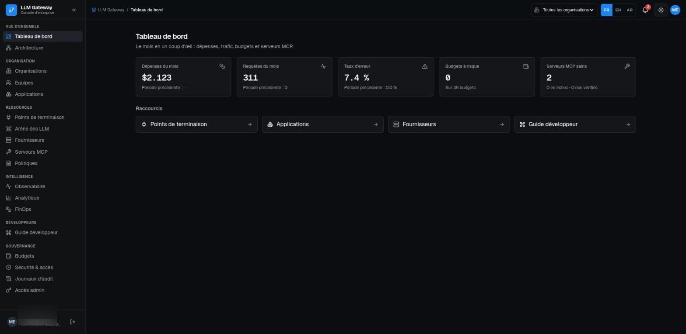
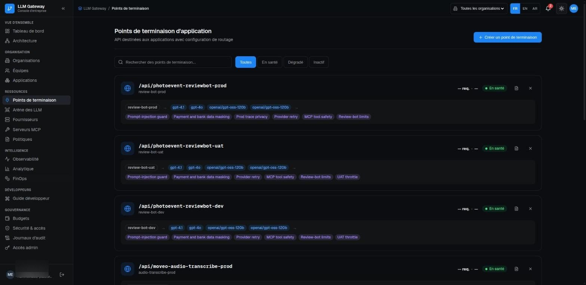
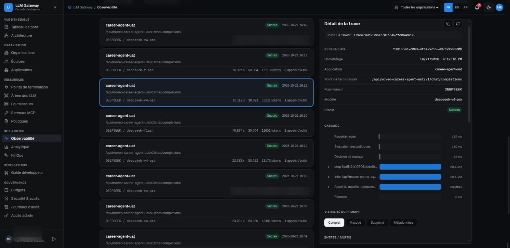
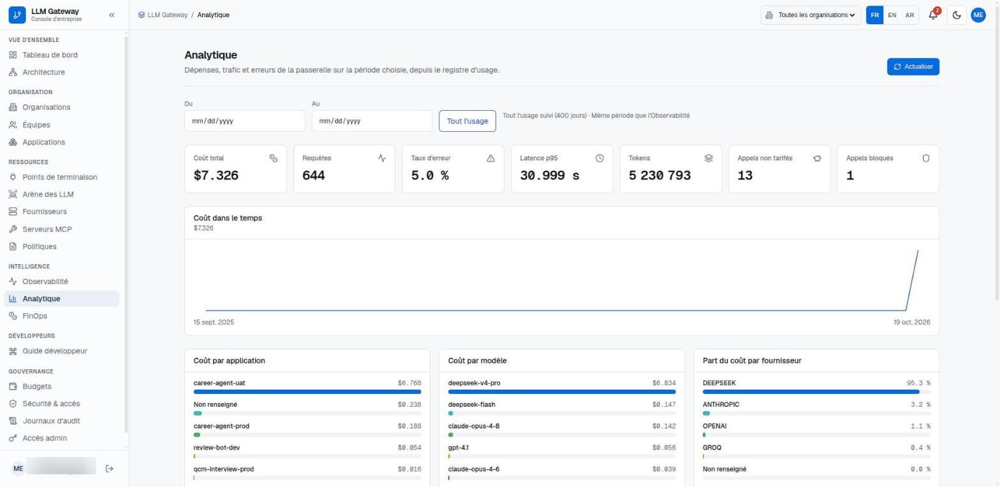

Un point d'entrée unique et maîtrisé entre les produits d'une entreprise et les fournisseurs de modèles d'IA. Il oriente chaque requête vers le bon modèle, tient les coûts dans le budget, applique des règles d'usage et garde la trace de chaque appel, le tout piloté depuis une console web.
5fournisseurs d'IA pris en charge (OpenAI, Anthropic, DeepSeek, Groq, NVIDIA)
3langues de la console : français, anglais, arabe
3environnements : développement, recette, production
1 000+tests automatisés sur les services principaux
En bref
LLM Gateway se place entre les applications d'une entreprise et les fournisseurs de modèles d'IA. Plutôt que chaque produit conserve ses propres clés et appelle les modèles directement, toutes les requêtes d'IA passent par la passerelle.
La passerelle choisit le modèle qui répond, bascule sur un modèle de secours si un fournisseur est en panne, vérifie la requête au regard des budgets et des règles d'usage, puis enregistre le coût, la durée et le résultat. Les administrateurs gèrent l'ensemble depuis une console web en français, en anglais ou en arabe, en thème clair ou sombre.
La plateforme fonctionne en environnements de développement, de recette et de production, et dessert plusieurs produits de la même entreprise.
Pour qui
Équipes produit
Les développeurs branchent leur application une seule fois sur la passerelle et accèdent à de nombreux modèles, avec un guide développeur et des exemples de code prêts à l'emploi.
Administrateurs de la plateforme
Ils organisent l'entreprise en organisations, équipes et applications, connectent les fournisseurs et décident des modèles utilisés par chaque application.
Direction et finance
Elles suivent les dépenses d'IA par application, modèle et fournisseur, fixent des budgets et reçoivent des alertes avant qu'un plafond soit atteint.
Sécurité et conformité
Elles définissent les règles d'usage, masquent les données sensibles dans les requêtes et consultent le journal d'audit des actions d'administration.
Le problème résolu
Avant la passerelle, chaque produit appelait les fournisseurs d'IA de son côté. Les clés étaient dispersées entre les services, personne n'avait de vue commune sur le coût de l'IA, et en cas d'incident rien ne permettait de retrouver la requête, le modèle ou l'application en cause.
La passerelle réunit ces appels sous un même toit : un seul endroit pour les accès aux fournisseurs, un seul jeu de règles, une seule vue des coûts et un historique de chaque requête.
Fonctionnalités principales
Routage avec modèles de secours
Chaque route d'application dispose d'une chaîne ordonnée de modèles. Si le premier échoue ou est indisponible, la requête passe automatiquement au suivant.
Réponses en direct
Les réponses peuvent être transmises mot à mot à l'application, avec de nouvelles tentatives en cas d'erreur du fournisseur et un délai maximal pour chaque requête.
Budgets et alertes
Des plafonds de dépenses par organisation, équipe ou application, avec prévision, alerte à un seuil choisi et blocage strict possible une fois le plafond atteint. Les alertes arrivent par email et dans la console.
Règles d'usage
Rattachées aux routes, elles limitent le débit et la taille des réponses, bloquent les tentatives d'injection de prompt, masquent les données personnelles ou bancaires et encadrent les nouvelles tentatives.
Observabilité
Chaque requête est tracée : modèle utilisé, durée, jetons, coût et chaque étape, de la vérification des règles à la réponse du modèle, affichée sous forme de chronologie.
Analyse des coûts
Coûts, requêtes, erreurs et latence dans le temps, ventilés par application, modèle et fournisseur, avec comparaison d'une semaine sur l'autre et projection des budgets.
Serveurs d'outils IA (MCP)
Des serveurs d'outils externes peuvent être enregistrés pour que les modèles appellent des outils métier pendant une conversation. Les outils sont découverts automatiquement, surveillés et classés par niveau de risque.
Arène des modèles
Deux modèles peuvent être testés côte à côte sur le même prompt pour comparer leurs réponses avant d'en retenir un pour une application.
Accès et sécurité
Connexion par compte utilisateur, clés d'API d'application affichées une seule fois, clés des fournisseurs chiffrées, demandes d'accès administrateur et journal d'audit complet.
Comment ça fonctionne
Une application envoie une requête
Le produit appelle sa propre route sur la passerelle avec sa clé d'API, comme il appellerait un fournisseur d'IA.
Règles et budgets sont vérifiés
La passerelle identifie l'application, applique les règles rattachées à sa route et s'assure que son budget autorise l'appel.
Un modèle est choisi
La passerelle envoie la requête au premier modèle de la chaîne et passe à un modèle de secours si le fournisseur ne répond pas.
Des outils sont appelés si besoin
Si le modèle demande un outil métier, la passerelle l'exécute sur le serveur d'outils enregistré et lui transmet le résultat.
La réponse est renvoyée et enregistrée
La réponse repart vers l'application, en direct ou d'un bloc, tandis que le coût, les jetons, la durée et chaque étape sont conservés pour la console.
Technologies
Interface
AngularConstruit la console d'administration et ses pages.
Angular MaterialFournit les composants d'interface de la console.
ngx-translateAffiche la console en français, en anglais et en arabe, y compris la mise en page de droite à gauche.
Serveur et API
PythonLangage de l'ensemble des services de la passerelle.
AWS LambdaExécute chaque service à la demande, sans serveur à administrer.
Amazon API GatewayExpose les API de la passerelle et de la console aux applications et aux utilisateurs.
Server-Sent EventsTransmet les réponses des modèles aux applications au fil de leur production.
Données
MongoDBStocke les organisations, routes, règles, budgets et le registre d'usage.
Amazon SQSMet en file les alertes de budget avant leur envoi par email et par notification.
IA
Fournisseurs de modèlesLes modèles d'OpenAI, Anthropic, DeepSeek, Groq et NVIDIA sont accessibles par une interface unique.
Model Context Protocol (MCP)Relie les modèles à des serveurs d'outils externes qu'ils peuvent appeler pendant une conversation.
LangfuseConserve le détail des appels aux modèles pour l'analyse.
Cloud et sécurité
Amazon CognitoGère l'inscription et la connexion des utilisateurs à la console.
AWS KMS et VaultChiffrent et conservent les clés des fournisseurs et les autres secrets.
Terraform et TerragruntDécrivent sous forme de code l'infrastructure cloud de chaque environnement.
GitLab CITeste, construit et déploie automatiquement chaque service.
Qualité
pytestExécute les tests automatisés des services de la passerelle.
VitestExécute les tests automatisés de la console.
Aperçu

Tableau de bord : le mois en un coup d'œil, avec dépenses, trafic, taux d'erreur, budgets et serveurs d'outils.

Routes d'application, chacune avec sa chaîne de modèles de secours et les règles d'usage qui s'y appliquent.

Observabilité : liste des requêtes tracées et chronologie détaillée de l'une d'elles.

Analytique en thème clair : coût dans le temps et coût par application, modèle et fournisseur.
Ce que ça apporte
Des coûts maîtrisés
Les dépenses d'IA sont visibles par application, modèle et fournisseur, et les budgets arrêtent les dépassements avant qu'ils ne surviennent.
Moins d'interruptions
Les modèles de secours prennent le relais quand un fournisseur tombe, et les produits continuent de répondre.
Une IA utilisée en sécurité
Les clés des fournisseurs restent dans un seul endroit protégé, les données sensibles peuvent être masquées et chaque action d'administration est journalisée.
Une intégration plus rapide
Un produit se branche une seule fois puis peut changer de modèle ou de fournisseur depuis la console, sans toucher à son code.